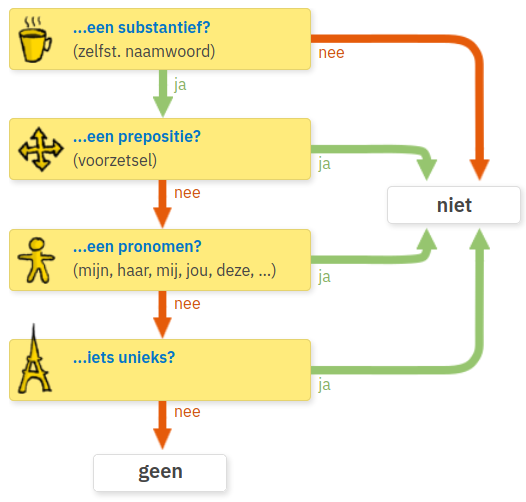

Phần 2 Cấu trúc câu - Zinsconstructie
2.1 Câu thông thường - De gewone zin
Môt dạng phổ biến của câu thông thường trong tiếng Hà Lan thường có cấu trúc như sau (TeMPO hoặc OTeMP):
Subject + Verbum 1 + Bepaald Object + Tijd + Manier + Plaats + Onbepaald Object + Verbum 2
Chủ ngữ + Động từ 1 + Tân ngữ xác định + Thời gian + Cách thức + Nơi chốn + Tân ngữ không xác định + Động từ 2
Một câu không nhất thiết cần phải có đầy đủ các yếu tố trên. Động từ cần phải chia cho phù hợp với chủ ngữ và thì.
Ví dụ về câu thông thường:
- Lisa gaat vandaag naar Brussel. (Hôm nay Lisa đi đến Bruxelles.)
- Ze is daar nog nooit geweest. (Cô ấy chưa bao giờ đến đó.)
- Ik zie vandaag een vriend op de markt. (Tôi thấy một người bạn hôm nay ở chợ. Tân ngữ không xác định đứng sau thời gian - TeMPO.)
- Ik zie mijn vriend vandaag op de markt. (Tôi thấy bạn của tôi hôm nay ở chợ. Tân ngữ xác định đứng trước thời gian - OTeMP.)
2.2 Câu đảo ngược - Inversie
Khi phần đầu tiên của câu chứa thông tin bổ sung thêm (extra informatie) mà không phải là chủ ngữ thì động từ phải được đem ra phía trước chủ ngữ.
Sau đây là dạng đảo ngược của ví dụ câu thông thường ở trên mà không bị thay đổi ý nghĩa.
2.3 Câu hỏi - Vraagzin
2.3.1 Câu hỏi với từ để hỏi - Vraagworden
Từ để hỏi luôn ở đầu câu và ngay sau đó là động từ 1 và chủ ngữ (nếu có) - dạng inversie.
- Wie gaat vandaag naar Brussel? (Ai đi đến Bruxelles ngày hôm nay?)
- Hoe gaat Lisa vandaag naar Brussel? (Lisa hôm nay đi đến Bruxelles bằng cách nào?)
- Wat is de hoofdstad van België? (Thủ đô của Bỉ là gì?)
- Waar gaat Lisa vandaag naartoe? (Hôm nay Lisa đi đến đâu?)
- Wanneer gaat Lisa naar Brussel? (Khi nào Lisa đi đến Bruxelles?)
- Waarom gaat Lisa naar Brussel? (Tại sao Lisa đi đến Bruxelles?)
2.4 Câu phủ định - Negatie
Tiếng Hà Lan sử dụng geen và niet trong câu phủ định.
- geen được dùng để phủ định tân ngữ không xác định (onbepaald object). Do đó chỉ sử dụng geen khi phần được phủ định (trừ chủ ngữ ra) không chứa giới từ, đại từ, hoặc một thứ gì đó cụ thể. Hai trường hợp điển hình dùng geen:
- niet dùng để phủ định hoàn toàn hoặc một phần câu khẳng định. Sau đây là một số trường hợp dùng niet và vị trí của niet trong câu.
- Trước một giới từ: Ik woon niet in Brussel. (Tôi không sống ở Bruxelles.)
- Trước một tính từ: Nederlands is niet moeilijk. (Tiếng Hà Lan không khó.)
- Trước graag, elke dag, dikwijls : Ik drink niet elke dag bier. (Tôi không uống bia mỗi ngày.)
- Sau động từ: Ik rook niet. (Tôi không hút thuốc.)
- Sau vandaag, ’s morgen: Ik eet ’s morgen niet. (Tôi không ăn vào buổi sáng.)
- một số trường hợp sử dụng được cả geen và niet nhưng ý nghĩa khác nhau. Ví dụ:
- Câu khẳng định: Ik wil een auto kopen. (Tôi muốn mua xe hơi.)
- Phủ định với geen: Ik wil geen auto kopen. (Phủ định auto. Tôi không muốn mua xe hơi, dù là 1 chiếc hay nhiều chiếc. Tôi có thể mua thứ khác.)
- Phủ định với niet: Ik wil niet een auto kopen. (Phủ định een auto kopen. Tôi không muốn mua một chiếc xe hơi. Tôi muốn mua nhiều hơn một chiếc.)
Sơ đồ sau dùng để nhận biết khi nào dùng geen hoặc niet:

Nguồn: Zichtbaar Nederlands
2.5 Nối hai câu - Twee zinnen combineren
2.5.1 Câu ghép hai mệnh đề chính - Nevenschikking
Các liên từ (conjunctiewoorden) en, of, maar, want thường được sử dụng để nối hai mệnh đề chính (độc lập). Hai mệnh đề (hai câu) không cần phải thay đổi cấu trúc.
- en (và):
- of (hoặc, hay là):
- maar (nhưng mà):
- want (bởi vì):
Chú ý nếu một hoặc hai câu ở dạng đảo ngược (inversie) thì vẫn giữ nguyên cấu trúc khi dùng nối câu với các liên từ này.
2.5.2 Câu ghép hai mệnh đề chính phụ - Ondershikking
Liên từ omdat (bởi vì) thường được sử dụng để nối hai mệnh đề phụ thuộc trong đó mệnh đề phía sau chỉ lý do phải thay đổi cấu trúc thành dạng đặc biệt gọi là katapult-cái nỏ (tất cả động từ bị kéo về phía sau chủ ngữ).
- Mệnh đề phía sau gồm một động từ thì kéo động từ về phía sau.
- Mệnh đề phía sau gồm hai động từ thì kéo hai động từ về phía sau, động từ 2 đứng sau động từ 1.
Ghi chú:
- want và omdat trong đa số các trường hợp đều có thể dùng thay thể cho nhau trừ một số ít ngoại lệ. Ví dụ omdat có thể đứng đầu câu còn want thì không.
- trong mệnh đề chứa omdat nếu động từ 2 ở dạng hoàn thành (participium) thì động từ 1 có thể đứng ở cuối.
Các liên từ khác: toen, als, sinds, nadat, voordat,… cũng theo sau nó là câu dạng katapult. Nếu là mệnh đề chứa liên từ vế trước thì vế sau dùng câu dạng đảo ngược (inversie). Ta coi mệnh đề trước như là thông tin bổ sung (extra informatie).